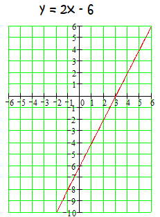
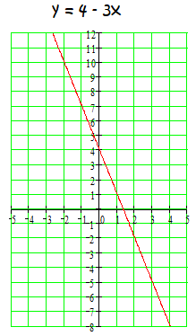
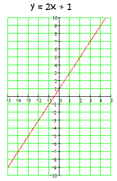
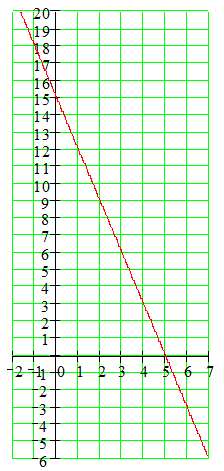
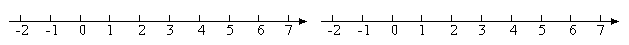

This Lesson emphasizes the relationship between a graph and an equation or inequality. This is a difficult concept for students, and it is worth pointing out to the class that understanding this connection is the goal of the Lesson. Stress that they must show their work on the graph. They will want to solve all the problems algebraically, but you could mention that they will soon encounter equations that they cannot solve with algebra.
Try to make students understand that, for a linear inequality, all the solutions lie on one side of the boundary value. This is why using a single test value works. The technique will have to be modified slightly when we solve nonlinear inequalities.
While they work on the Activities, walk around to check each student’s graphs, to see if they are getting it. If one person in the group is marking the graphs correctly, ask him or her to demonstrate the graphical technique to the others in the group.
Activity1.2.1.Evaluating and Solving.
Use the graph of \(y=2x-6\) to complete the tasks.

Evaluate \(y=2x-6\) when \(x=-1\text{.}\)
\(\blert{\text{Circle the point on the graph with x=-1.}}~~~\blert{\text{What is its y-coordinate?}}\)
Solve \(y=2x-6\) when \(y=4\text{.}\)
\(\blert{\text{Circle the point on the graph with y=4.}}~~~\blert{\text{What is its x-coordinate?}}\)
Find the answers to parts (a) and (b) algebraically, and compare with the answers you obtained from the graph.
Activity1.2.2.Solving Equations Graphically.
Use the graph of \(y=4-3x\) to solve the equations. (Show your work by making a dot at the correct point on the graph for each equation.)

Solve \(4-3x=10\text{.}\)
\(\blert{\text{The y-value is 10. Find the x-value.}}\)
Solution:
Solve \(-2=4-3x\text{.}\)
\(\blert{\text{The y-value is -2. Find the x-value.}}\)
Solution:
Solve \(0=4-3x\text{.}\)
\(\blert{\text{The y-value is 0. Find the x-value.}}\)
Solution:
d. Look back at your work in Activity 2. Use the graph to show that the following three statements are different ways of saying the same thing:
The point \((-1,7)\) lies on the graph of \(y=4-3x\text{.}\)
\(x=-1,~y=7\) is a solution of the equation \(y=4-3x\text{.}\)
\(x=-1\) is a solution of the equation \(7=4-3x\text{.}\)
Activity1.2.3.Solving Inequalities Graphically.
Solve \(~2x+1 \lt 7\text{.}\)
\(\displaystyle \blert{\text{Find the point on the graph with y = 7.}}\)
\(\blert{\text{Which points on the graph have}}\)
\(\blert{\text{y-coordinates less than 7?}}\)
\(\displaystyle \blert{\text{Shade those points.}}\)
\(\blert{\text{Drop straight down from the marked}}\)
\(\blert{\text{points to the x-axis.}}\)
\(\displaystyle \blert{\text{Shade that portion of the x-axis.}}\)
\(\displaystyle \blert{\text{Write your solution as an inequality.}}\)

Solve \(2x+1 \ge 5\text{.}\)
\(\displaystyle \blert{\text{Find the point on the graph with y = 5.}}\)
\(\blert{\text{Which points on the graph have}}\)
\(\blert{\text{y-coordinates greater than or equal to 5?}}\)
\(\displaystyle \blert{\text{Shade those points.}}\)
\(\blert{\text{Drop straight down from the marked}}\)
\(\blert{\text{points to the x-axis.}}\)
\(\displaystyle \blert{\text{Shade that portion of the x-axis.}}\)
\(\displaystyle \blert{\text{Write your solution as an inequality.}}\)
Use the graphs of \(~y=15-3x~\) to solve the inequalities:
\(15-3x \ge 9\)

Solution:
\(6 \gt 15-3x\)
Solution:
Graph each solution on a number line:

How does the graph on the number line compare to your solution on the \(x\)-axis in each problem?
Subsection1.2.1Check Your Understanding
What are the two skills compared in Activity 1? What is the difference in the methods for performing the two skills?
What was different about the problems in Activity 3, compared to those in Activity 2?
How were the solutions you found in Activity 3 different from the solutions in Activity 2?
In Activity 3, how do you decide which side of the boundary point to shade?
Subsection1.2.2Wrap-Up
In this Lesson, we worked on the following skills related to linear models:
Recognize a solution of an equation or an inequality
Solve a linear inequality, and graph the solutions on a number line
Recognize a solution of an equation in two variables
Use the connection between the graph of an equation and its solutions
Use a graph to solve an equation or inequality in one variable
Subsection1.2.3Questions for Writing or Discussion
In Activity 2 we used a graph of \(~y=4-3x~\) to solve the equation \(~4-3x=10\text{.}\) Why can we do this? (How are the two equations related?)
In Activity 3a we shaded one side of the boundary value, \(x=3\text{,}\) on the \(x\)-axis, and said that the solutions of the inequality are any \(x\)-values with \(x \lt 3\text{.}\) Verify the solution by checking two \(x\)-values less than 3, and two \(x\)-values greater than 3.
Suppose you have an increasing graph, for example, \(y=2x-8\text{.}\) If you know that \(y \gt 5\) for a particular \(x\)-value, say, \(x=9\text{,}\) how do you know that \(y \gt 5\) for all \(x \gt 9\text{?}\)
In Activity 2 we solved the equation \(4-3x=10\) by using the graph of \(y=4-3x\text{.}\) Explain why the following statement is incorrect: "The solution of \(4-3x=10\) is \((-2,10)\text{.}\)"
Concept Questions.
Suppose we use the graph of \(~y=3-4x~\) to solve the equation \(~0=3-4x~\text{.}\) What do we call the point on the graph that supplies the solution of this equation?
The \(x\)-intercept
The \(y\)-intercept
The intersection point
The solution point
Is \(-4\) a solution of \(x \lt -4\text{?}\) Is \(-4\) a solution of \(x \le -4\text{?}\)
Yes, Yes
No, No
Yes, No
No, Yes
A classmate says that any inequality of the form \(mx+b \lt k\) has solutions of the form \(x \lt p\) , for some number \(p\text{.}\) Under what conditions is this statement false?
\(m\) is negative
\(b\) is negative
\(k\) is negative
All of the above
If \(x \lt k\) is the solution for \(~1.8x-3.5 \gt 9.4\text{,}\) what is the solution for \(~1.8x-3.5 \lt 9.4\) ?